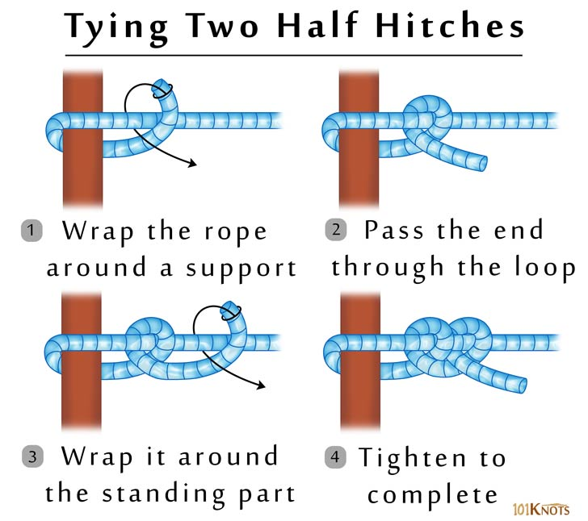

Two Half Hitches
You can use two half hitches to secure a line to trees or poles, or to secure the line to itself like you would tying a trucker’s hitch. A half hitch is fairly easy to tie, and I use it often to tie tarps up for shelters, or to hang up hammocks.
How to tie two half hitches:
After you wrap the rope around the standing end and through the inside of the loop created to make the first half hitch, wrap around the line the same way again to make the second half hitch. Pull it tight and you should have two half hitches, one seated next to the other. If you want added insurance, you can tie an overhand knot with the tag end of the line to keep the two half hitches from slipping.
